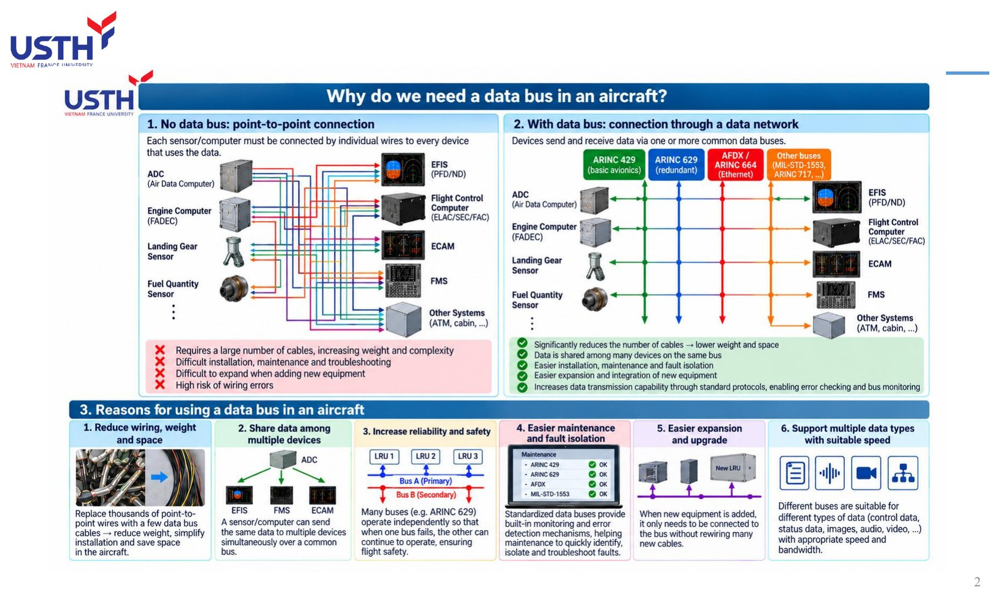
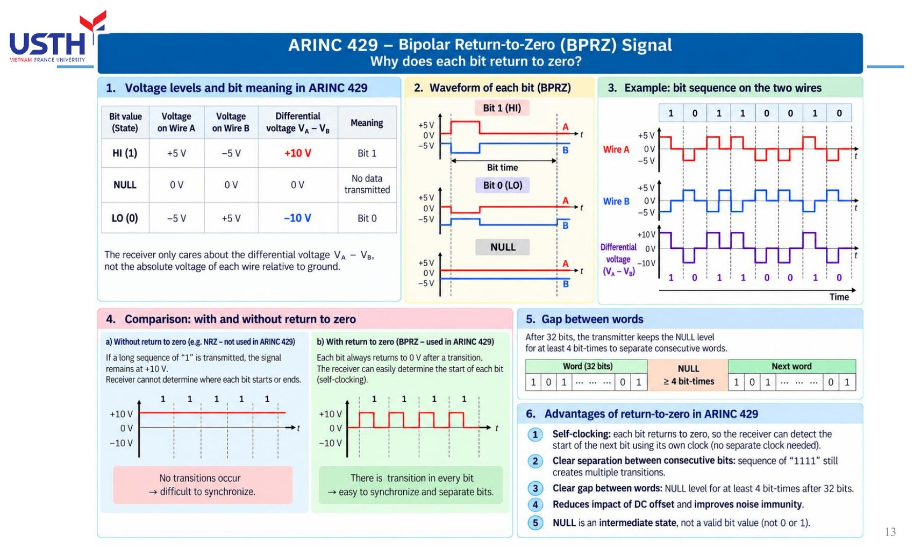
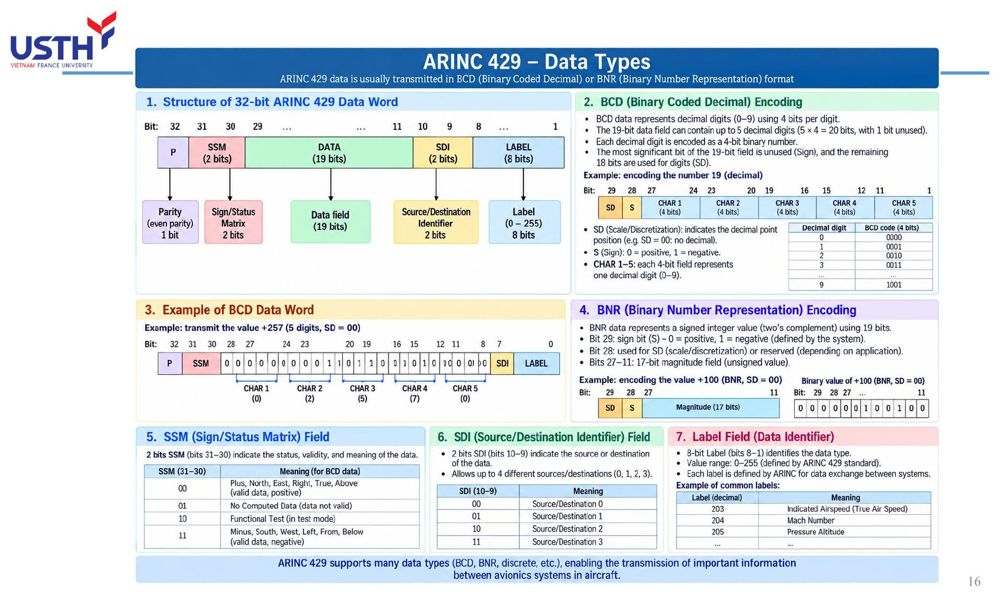
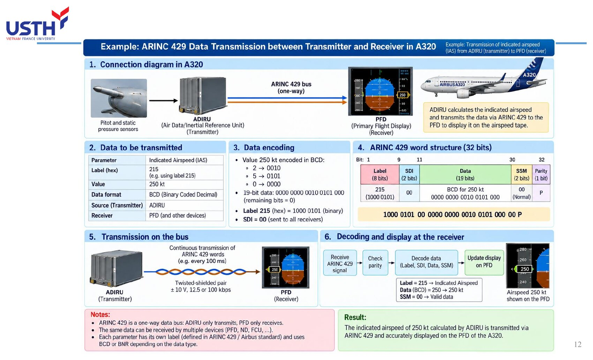
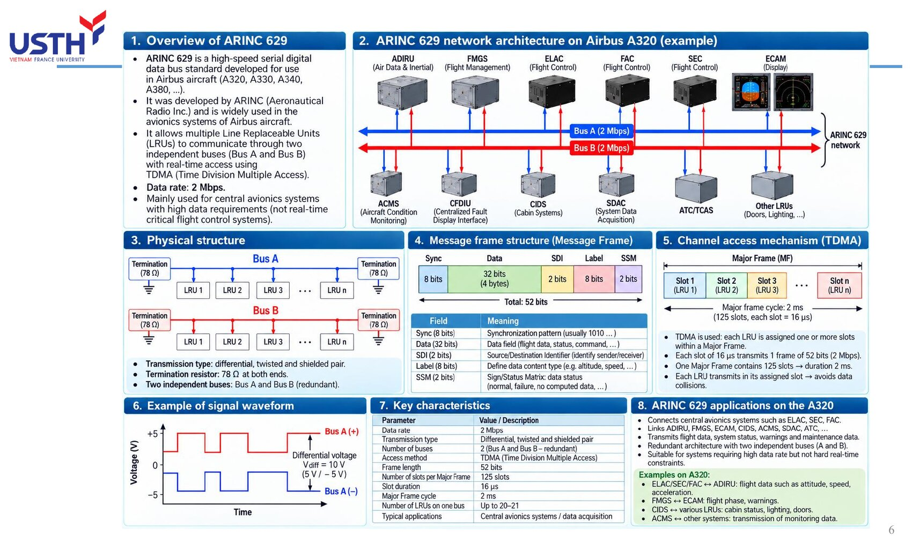
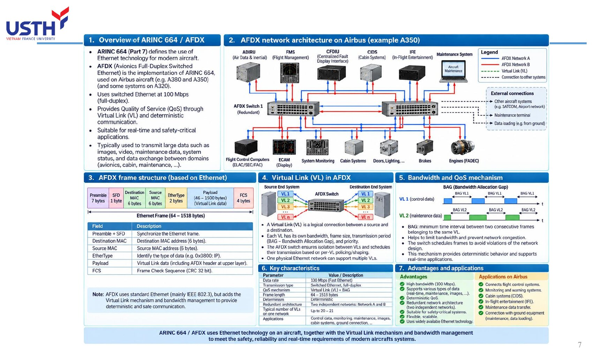
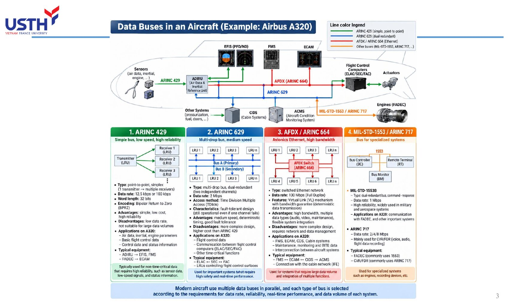

Tooley ch.4 (tr.53-69) · Bài giảng "Data Buses" (18 slide)
Tooley: Ch.4 Data buses (p.53-69): bus rationale, ARINC 429 (electrical/word format/BCD-BNR), other standards (ARINC 629/AFDX/MIL-STD-1553/legacy buses), 17-question MCQ bank
Floyd: KHÔNG CÓ chương nào về bus dữ liệu hàng không trong Floyd: đây là giáo trình điện tử số thuần tuý (cổng logic, bộ nhớ), không đề cập avionics/giao tiếp nối tiếp chuyên dụng. Toàn bộ module này dựa vào Tooley và bộ slide bài giảng riêng của môn.
Module có độ khớp THẤP NHẤT với Floyd trong cả 5 module (thấp hơn cả Module 04): chủ đề bus hàng không hoàn toàn vắng mặt trong Floyd, nên quiz của module này chỉ có 2 nguồn (Tooley + câu bổ sung), không có mục quiz riêng từ Floyd.
Một máy bay hiện đại có hàng trăm LRU (Line Replaceable Unit) cần trao đổi dữ liệu với nhau. Thay vì nối dây riêng cho từng cặp thiết bị, các hệ thống avionics dùng BUS DỮ LIỆU: một (hoặc vài) đường truyền dùng chung theo đúng một chuẩn giao tiếp. Module này đi từ lý do cần bus, qua chuẩn phổ biến nhất (ARINC 429), tới các chuẩn khác (ARINC 629, AFDX/664, MIL-STD-1553) và ứng dụng thật trên Airbus A320.
Tooley ch.4 (tr.53-69) · Bài giảng "Data Buses" (18 slide)
Trước khi có bus dữ liệu, mỗi cảm biến/máy tính (ADC, FADEC, cảm biến càng đáp...) phải nối dây RIÊNG tới MỌI thiết bị cần dùng dữ liệu đó (EFIS, FMS, ECAM...). Với hàng chục cảm biến và hàng chục màn hình/máy tính, số dây tăng theo kiểu tổ hợp, không tuyến tính.

Hãy tưởng tượng 5 cảm biến, mỗi cảm biến cần gửi dữ liệu tới 5 màn hình khác nhau: nối điểm-điểm cần tới 5×5=25 đường dây riêng biệt. Nếu thêm 1 cảm biến mới, phải kéo thêm 5 dây mới (một dây tới mỗi màn hình). Đây chính xác là sơ đồ bên trái trong slide bài giảng: ADC, FADEC, cảm biến càng đáp, cảm biến nhiên liệu... mỗi thiết bị có một bó dây màu riêng chạy chằng chịt tới EFIS, Flight Control Computer, ECAM, FMS.
4 nhược điểm chính được liệt kê ngay trong bài giảng: cần rất nhiều dây (nặng, tốn chỗ), khó lắp đặt/bảo trì/dò lỗi, khó mở rộng khi thêm thiết bị mới, và dễ đấu nhầm dây do số lượng quá lớn.
Thay vì dây riêng cho từng cặp thiết bị, TẤT CẢ thiết bị cùng nối vào 1 (hoặc vài) đường bus chung, gửi/nhận dữ liệu theo đúng 1 chuẩn giao tiếp (protocol). Ví dụ trong bài giảng: ARINC 429, ARINC 629, AFDX/664, MIL-STD-1553 là 4 “làn” bus khác nhau, mỗi làn phục vụ một nhóm nhu cầu riêng.
Quay lại ví dụ 5 cảm biến × 5 màn hình: nếu dùng 1 đường bus chung, mỗi cảm biến chỉ cần ĐÚNG 1 dây nối vào bus, và mỗi màn hình cũng chỉ cần ĐÚNG 1 dây đọc từ bus: tổng cộng chỉ 10 dây thay vì 25, và con số này CHỈ TĂNG TUYẾN TÍNH khi thêm thiết bị (thêm 1 cảm biến = thêm đúng 1 dây), không tăng theo tổ hợp như kiểu điểm-điểm.
Bài giảng liệt kê rõ 5 lợi ích tương ứng với 5 nhược điểm ở slide trước: giảm hẳn số dây/khối lượng, nhiều thiết bị chia sẻ được cùng dữ liệu, dễ lắp đặt/bảo trì/cô lập lỗi hơn, dễ tích hợp thiết bị mới, và hỗ trợ kiểm tra lỗi/giám sát bus theo chuẩn.
| # | Lý do | Giải thích ngắn |
|---|---|---|
| 1 | Giảm dây, khối lượng, không gian | Thay hàng nghìn dây điểm-điểm bằng vài cáp bus |
| 2 | Chia sẻ dữ liệu | 1 cảm biến phát, nhiều thiết bị cùng nhận |
| 3 | Tăng độ tin cậy/an toàn | Nhiều bus độc lập (vd Bus A/B) hoạt động song song |
| 4 | Dễ bảo trì, cô lập lỗi | Cơ chế giám sát/báo lỗi tích hợp sẵn theo chuẩn |
| 5 | Dễ mở rộng, nâng cấp | Thiết bị mới chỉ cần nối vào bus, không kéo dây mới |
| 6 | Hỗ trợ nhiều loại dữ liệu, tốc độ phù hợp | Mỗi loại bus có tốc độ/đặc tính riêng cho đúng nhu cầu |
Bảng này gộp lại đúng 6 ô vuông ở phần dưới cùng slide 2 của bài giảng. Điểm đáng chú ý: lý do số 3 (tăng độ tin cậy) không chỉ nhờ CÓ bus, mà nhờ THIẾT KẾ DƯ THỪA (redundancy) của bus đó, ví dụ ARINC 629 có Bus A (chính) và Bus B (dự phòng) hoạt động ĐỘC LẬP, nếu Bus A hỏng thì Bus B vẫn tiếp tục hoạt động bình thường.
Lý do số 6 giải thích vì sao máy bay không dùng DUY NHẤT một loại bus cho mọi thứ: dữ liệu điều khiển bay cần độ tin cậy/thời gian thực cao nhưng khối lượng nhỏ (hợp với ARINC 429/629), còn dữ liệu bảo trì/hình ảnh/video cần băng thông lớn (hợp với AFDX 100 Mbps). Đây chính là lý do một chiếc A320 dùng SONG SONG nhiều loại bus khác nhau, không chỉ 1 loại duy nhất.
| Bus | Tốc độ | Kiểu | Dùng cho |
|---|---|---|---|
| ARINC 429 | 12,5/100 kbps | 1 chiều, điểm-điểm | Avionics cơ bản, dữ liệu cảm biến |
| ARINC 629 | 2 Mbps | 2 chiều, dư thừa kép | Điều khiển bay thời gian thực |
| AFDX/ARINC 664 | 100 Mbps | Ethernet chuyển mạch | Dữ liệu khối lượng lớn, đa hệ thống |
| MIL-STD-1553/ARINC 717 | 1 Mbps / 2-8 Mbps | Chuyên dụng | Quân sự, FADEC, ghi dữ liệu bay |
Bảng này tóm tắt đúng 4 cột màu trong sơ đồ “Data Buses in an Aircraft (A320)” của bài giảng: xanh lá (ARINC 429), xanh dương (ARINC 629), đỏ (AFDX/664), cam (MIL-STD-1553/ARINC 717). Mỗi màu dây trong sơ đồ gốc nối một nhóm thiết bị khác nhau: ARINC 429 nối cảm biến tới ADIRU/EFIS/FMS, ARINC 629 nối các máy tính điều khiển bay với nhau, AFDX nối hầu hết hệ thống avionics hiện đại, còn MIL-STD-1553/717 dành riêng cho động cơ (FADEC) và thiết bị ghi âm/dữ liệu buồng lái.
Thứ tự tốc độ (429 < 1553 < 629 < AFDX) không tỉ lệ thuận với “độ quan trọng”: ARINC 429 chậm nhất nhưng vẫn được dùng rộng rãi nhất vì đơn giản, rẻ, cực kỳ tin cậy cho dữ liệu KHÔNG cần băng thông lớn.
Một máy bay có 8 cảm biến, mỗi cảm biến cần gửi dữ liệu riêng tới 6 màn hình hiển thị khác nhau. Nếu nối điểm-điểm, cần bao nhiêu đường dây? Nếu dùng 1 bus chung, cần bao nhiêu đường dây (giả sử mỗi thiết bị chỉ cần 1 dây nối vào bus)?
Điểm-điểm: 8×6=48 đường dây riêng biệt (mỗi cảm biến nối riêng tới từng màn hình). Dùng bus chung: 8+6=14 dây (mỗi thiết bị, dù là cảm biến hay màn hình, chỉ cần đúng 1 dây nối vào bus).
Chênh lệch 48 so với 14 (gần gấp 3.5 lần) minh hoạ rõ: cách nối điểm-điểm tăng theo TÍCH số thiết bị (n×m), còn bus chung tăng theo TỔNG số thiết bị (n+m). Khoảng cách này càng lớn khi số thiết bị càng nhiều, đúng như lý do số 1 đã nêu ở slide trước.
ARINC 429 là bus ĐIỂM-ĐIỂM, MỘT CHIỀU: 1 transmitter (LRU phát) có thể nối tới tối đa 20 receiver (LRU nhận), nhưng dữ liệu chỉ chạy một chiều duy nhất. Muốn 2 LRU trao đổi dữ liệu qua lại, cần 2 kênh ARINC 429 riêng biệt, mỗi kênh một chiều.
Đây là điểm dễ gây nhầm lẫn nhất khi mới học ARINC 429: tại sao một LRU như ADIRU vừa có chân Tx (phát) vừa có chân Rx (nhận)? Câu trả lời nằm ở đúng slide 11 của bài giảng: vì ARINC 429 là bus MỘT CHIỀU, nên 1 kênh vật lý chỉ truyền được 1 hướng. Nếu ADIRU cần GỬI dữ liệu khí động cho FMGC VÀ NHẬN lệnh chọn chế độ từ FMGC, đó là 2 kênh ARINC 429 hoàn toàn riêng biệt chạy song song, không phải 1 kênh “hai chiều”.
Một LRU phức tạp như ADIRU có thể có hàng chục kênh Tx/Rx khác nhau, mỗi kênh phục vụ đúng 1 luồng dữ liệu 1 chiều tới/từ đúng 1 nhóm thiết bị.
Cáp xoắn đôi có vỏ bọc (shielded twisted pair). Mỗi dây (A, B) mang điện áp +5V/0V/-5V so với đất. Bộ nhận chỉ quan tâm điện áp VI SAI (A-B): +10V = bit 1, -10V = bit 0, 0V = trạng thái NULL (không truyền).
Dùng tín hiệu VI SAI (differential signaling) thay vì đo điện áp tuyệt đối trên 1 dây so với đất là một kỹ thuật chống nhiễu kinh điển: nếu có nhiễu điện từ bên ngoài tác động, nó thường ảnh hưởng GẦN NHƯ BẰNG NHAU lên cả 2 dây A và B (vì chúng xoắn sát nhau), nên hiệu số (A-B) hầu như KHÔNG đổi, giữ nguyên được thông tin bit dù môi trường điện từ xung quanh (động cơ, radar) rất nhiễu.
Bảng điện áp trong bài giảng rất dễ nhớ theo quy tắc đối xứng: bit 1 → A dương/B âm; bit 0 → A âm/B dương (đảo ngược hoàn toàn); NULL → cả 2 dây về 0V (không lệch).
ARINC 429 dùng mã hoá Bipolar Return to Zero (BPRZ): giữa mỗi bit, tín hiệu luôn trở về mức 0V trước khi sang bit kế tiếp. Nhờ vậy bộ nhận TỰ TÁCH được nhịp (self-clocking) ngay từ tín hiệu dữ liệu, không cần một đường dây clock riêng.

So sánh trực tiếp ở slide bài giảng: nếu KHÔNG về 0 (như mã NRZ), một chuỗi “1111” liên tiếp sẽ giữ nguyên điện áp +10V suốt 4 bit liền, không có cạnh chuyển mức nào để bên nhận biết chính xác ranh giới giữa các bit: dễ bị “trôi nhịp” (lệch đếm bit) nếu đồng hồ 2 bên không khớp hoàn hảo. Với BPRZ, MỖI bit đều có ít nhất 1 cạnh lên và 1 cạnh xuống (kể cả chuỗi 1111 liên tục), nên bên nhận luôn có mốc để đếm lại nhịp, không bị trôi.
Cái giá phải trả: BPRZ cần TẦN SỐ CHUYỂN MẠCH cao hơn NRZ ở cùng tốc độ bit (vì có thêm cạnh chuyển về 0 giữa mỗi bit), nhưng đổi lại độ tin cậy đồng bộ cao hơn hẳn, đáng giá cho ứng dụng avionics quan trọng.
ARINC 429 có 2 tốc độ: low speed 12,5 kbps (phổ biến nhất) và high speed 100 kbps. Với từ dữ liệu luôn dài 32 bit: t_từ = 32/R. Ở 12,5 kbps: t=2,56 ms. Ở 100 kbps: t=0,32 ms (nhanh gấp 8 lần).
Đây chính là công thức “Công thức” của module này (xem khung công thức bên dưới deck). Thay số trực tiếp: 32 bit / 12.500 bit/s = 0,00256 s = 2,56 ms; và 32 bit / 100.000 bit/s = 0,00032 s = 0,32 ms. Hai con số này khớp CHÍNH XÁC với bảng “Data Rate and Bit Timing” trong bài giảng, đã tự kiểm tra lại bằng notebook đi kèm.
Vì sao đa số hệ thống A320 vẫn dùng tốc độ THẤP (12,5 kbps) thay vì tốc độ cao? Vì phần lớn dữ liệu avionics cơ bản (tốc độ bay, độ cao, trạng thái cảnh báo...) không thay đổi nhanh tới mức cần cập nhật hơn vài trăm lần/giây, nên tốc độ thấp đã quá đủ và còn tiết kiệm hơn về mạch điện.
ARINC 429 nối gần như MỌI nhóm hệ thống trên A320: điều khiển bay (ELAC/SEC/FAC), dẫn đường (FMGC/MCDU/FCU), khí động/quán tính (ADIRU), hiển thị/cảnh báo (DMC/DU/FWC), liên lạc (VHF/HF/AMU/RMP), và cả động cơ, điện, càng đáp, nhiên liệu...
Sơ đồ trong bài giảng cho thấy ARINC 429 không phải bus “nhỏ lẻ” chỉ dùng cho vài thiết bị, mà là XƯƠNG SỐNG kết nối hầu hết LRU trên A320, với 2 bus song song Bus A và Bus B để dự phòng. Mỗi LRU trong sơ đồ đều có ký hiệu Tx (đỏ, phát) và/hoặc Rx (xanh, nhận) riêng biệt, đúng với nguyên tắc 1-chiều đã học ở slide trước.
Bảng “Receiver of some LRUs” trong bài giảng là một ví dụ thực hành tốt: ADIRU phát dữ liệu khí động/quán tính, được NHIỀU LRU khác cùng nhận (FMGC, FWC, DMC) nhờ đặc tính multi-drop (1 transmitter → tối đa 20 receiver) của ARINC 429.
Đề thi hay hỏi “điện áp TRÊN CÁP ARINC 429 là bao nhiêu?”: đáp án ĐÚNG là ±5V (điện áp từng dây A hoặc B so với đất), KHÔNG phải ±10V (đó là điện áp VI SAI giữa 2 dây, chỉ xuất hiện khi so sánh A với B).
Đây là đúng câu hỏi số 9 trong bộ 17 câu trắc nghiệm gốc của sách Tooley, và đáp án chính thức của sách là ±5V chứ không phải +5V/+10V hay ±15V. Nhầm lẫn này rất phổ biến vì nhiều tài liệu khác chỉ nhắc tới con số “10V” (điện áp vi sai) mà quên nói rõ đó là hiệu số giữa 2 dây, không phải điện áp đo trực tiếp trên 1 dây.
Mẹo nhớ: luôn hỏi lại “điện áp NÀY đo so với đất (ground) hay so với dây còn lại?” trước khi chọn đáp án cho bất kỳ câu hỏi điện áp vi sai nào.
Mỗi từ ARINC 429 dài CỐ ĐỊNH 32 bit, gồm 5 trường theo đúng thứ tự: Label (8 bit, bit 1-8) → SDI (2 bit) → Data (19 bit) → SSM (2 bit) → Parity (1 bit, bit 32). Bit 1 (Label) truyền ĐI TRƯỚC, bit 32 (Parity) truyền SAU CÙNG.
Thứ tự truyền “LSB trước, MSB sau” (bit 1 là LSB của toàn từ, truyền đầu tiên) là một chi tiết dễ bị bỏ sót nhưng quan trọng khi tự tay giải mã một từ ARINC 429 từ dạng sóng: nếu đếm bit sai thứ tự, toàn bộ Label/Data sẽ bị đọc sai.
8+2+19+2+1 = 32, khớp đúng tổng độ dài từ. Đây là lý do CÂU HỎI số 8 và số 15 trong bộ trắc nghiệm gốc (Label=8 bit, độ dài từ=32 bit) có thể tính được trực tiếp từ sơ đồ này mà không cần học thuộc lòng, chỉ cần nhớ đúng công thức cộng 5 trường.
Label (8 bit) xác định LOẠI dữ liệu đang được truyền, ví dụ Label 203 = tốc độ bay chỉ thị (Indicated Airspeed), Label 204 = số Mach, Label 205 = độ cao khí áp (Pressure Altitude). Có tối đa 256 giá trị Label khác nhau (0-255).
Label hoạt động giống như “nhãn dán” trên một gói hàng: bên nhận không cần biết trước nội dung gói hàng là gì, chỉ cần đọc nhãn (Label) để biết CÁCH xử lý 19 bit Data đi kèm (vd đọc theo định dạng BCD hay BNR, đơn vị gì, thang đo nào).
Vì Label chỉ có 8 bit (256 giá trị) nhưng số loại dữ liệu avionics thực tế nhiều hơn 256, nên trường SDI (Source/Destination Identifier) đi kèm được dùng để PHÂN BIỆT THÊM nguồn/đích trong cùng 1 Label, mở rộng số lượng “kênh” phân biệt được.
| Định dạng | Cách mã hoá | Dấu âm/dương |
|---|---|---|
| BCD | Mỗi chữ số thập phân = 4 bit riêng | 1 bit dấu (S) + chữ số |
| BNR | Toàn bộ giá trị = 1 số nhị phân | Bù hai (two's complement) |

BCD (như đã học ở Module 01) tách TỪNG chữ số thập phân thành 4 bit riêng: ví dụ 250 → CHAR1=2(0010), CHAR2=5(0101), CHAR3=0(0000). Ưu điểm: dễ hiển thị trực tiếp ra màn hình 7 đoạn mà không cần đổi cơ số. Nhược điểm: lãng phí bit (4 bit chỉ biểu diễn được 10 trong 16 tổ hợp).
BNR mã hoá TOÀN BỘ giá trị thành 1 số nhị phân duy nhất (không tách từng chữ số), dùng bù hai để biểu diễn số âm: bit 29 (MSB của trường Data) là bit dấu, 0=dương, 1=âm. BNR hiệu quả hơn BCD về mặt bit, nên được dùng cho dữ liệu cần độ chính xác cao như toạ độ, tốc độ góc.
SSM (Sign/Status Matrix, 2 bit) báo dữ liệu đang ở trạng thái nào. Với BNR: 00=Failure Warning (lỗi), 01=No Computed Data (chưa có dữ liệu), 10=Functional Test (đang tự kiểm tra), 11=Normal Operation (bình thường, hợp lệ).
Đây là một cơ chế TỰ BÁO LỖI rất thông minh: thay vì chỉ gửi SỐ LIỆU và hy vọng nó đúng, mỗi từ ARINC 429 LUÔN kèm theo “nhãn độ tin cậy” của chính số liệu đó. Nếu ADIRU phát hiện cảm biến tốc độ bay bị lỗi, nó vẫn gửi từ dữ liệu như bình thường nhưng đặt SSM=00 (Failure Warning): bên nhận (PFD) đọc thấy SSM này sẽ hiển thị cảnh báo thay vì tin vào con số (có thể sai) trong trường Data.
Đây là lý do một kỹ sư avionics khi debug KHÔNG BAO GIỜ chỉ nhìn trường Data để kết luận dữ liệu đúng hay sai: phải luôn kiểm tra SSM trước tiên.
Bit cuối cùng (bit 32) là bit chẵn lẻ LẺ (odd parity): tổng số bit 1 trong toàn bộ 32 bit LUÔN LÀ SỐ LẺ. Nếu bên nhận đếm được tổng số bit 1 là SỐ CHẴN, từ dữ liệu bị coi là lỗi và bị loại bỏ.
Cách hoạt động: bên phát đếm số bit 1 trong 31 bit đầu (Label+SDI+Data+SSM); nếu con số đó đã LẺ, đặt Parity=0 (không cần thêm); nếu con số đó CHẴN, đặt Parity=1 (để tổng cộng thành lẻ). Bên nhận chỉ cần đếm lại tổng 32 bit, nếu ra số chẵn thì chắc chắn có ít nhất 1 bit đã bị lật do nhiễu trên đường truyền.
Giới hạn của parity 1-bit: nó chỉ phát hiện được số LẺ bit lỗi (1, 3, 5...), còn nếu đúng 2 bit bị lật cùng lúc (hiếm nhưng có thể), tổng vẫn đúng tính chẵn/lẻ nên KHÔNG phát hiện được: đây là lý do các hệ thống an toàn cao hơn (như AFDX) dùng CRC nhiều bit thay vì chỉ 1 bit parity.
ADIRU tính IAS=250kt → mã hoá BCD: 2→0010, 5→0101, 0→0000 → ghép vào 19 bit Data. Gắn thêm Label (nhận diện IAS), SDI, SSM=11 (Normal), tính Parity → đóng gói thành 1 từ 32 bit → gửi lặp lại mỗi ~100ms qua ARINC 429 Bus A tới PFD.

Đây là ví dụ “đi từ đầu tới cuối” tổng hợp lại TẤT CẢ các trường đã học trong phần này: Label (nhận diện đây là IAS), SDI (xác định nguồn/đích), Data dạng BCD (giá trị 250), SSM (báo dữ liệu hợp lệ), Parity (tự kiểm tra lỗi). Bên nhận (PFD) làm NGƯỢC LẠI đúng các bước đó: kiểm tra parity trước, đọc Label để biết đây là IAS, đọc SSM để chắc chắn dữ liệu hợp lệ, rồi mới đọc Data và hiển thị lên thước tốc độ.
Việc gửi LẶP LẠI liên tục (không chỉ gửi 1 lần) rất quan trọng: nếu PFD bỏ lỡ 1 từ (nhiễu, lỗi parity), nó chỉ cần đợi khoảng 100ms là có ngay giá trị mới, không bị “đứng hình” vĩnh viễn vì mất đúng 1 gói tin.
ARINC 629 (2 Mbps, nhanh gấp 20 lần ARINC 429) là bus HAI CHIỀU: mỗi LRU vừa có thể phát (Tx) vừa có thể nhận (Rx) trên CÙNG một đường bus. Dùng TDMA (Time Division Multiple Access): mỗi LRU được cấp sẵn (các) khe thời gian cố định để phát, tránh xung đột dữ liệu.

Điểm đặc biệt nhất của ARINC 629, được chính bài giảng nhấn mạnh: đạt được giao tiếp HAI CHIỀU mà KHÔNG CẦN một bộ điều khiển trung tâm (bus controller) riêng, vốn có thể trở thành điểm lỗi đơn (single point of failure) nếu nó hỏng. Thay vào đó, mỗi LRU tự biết “lượt” của mình (slot) trong Major Frame nhờ đồng bộ thời gian chung, không cần ai ra lệnh “tới lượt anh phát”.
Với 125 khe (slot) mỗi 16 μs trong 1 Major Frame dài 2ms, và tối đa 20-21 LRU trên 1 bus: đây là con số thực tế trong bài giảng, có thể dùng để tính lại thời gian 1 chu kỳ hoàn chỉnh (125×16μs=2000μs=2ms, khớp đúng).
Mỗi khung tin ARINC 629 gồm: Sync (8 bit) + Data (32 bit, 4 byte) + SDI (2 bit) + Label (8 bit) + SSM (2 bit) = 52 bit. So với ARINC 429 (32 bit/từ, không có Sync riêng), ARINC 629 thêm trường Sync để đồng bộ khung trong hệ thống TDMA nhiều LRU dùng chung 1 bus.
Nhận xét thú vị: phần Label (8 bit), SDI (2 bit), SSM (2 bit) của ARINC 629 GIỐNG HỆT ARINC 429 về kích thước và ý nghĩa, cho thấy ARINC 629 được thiết kế kế thừa trực tiếp từ ARINC 429, chỉ MỞ RỘNG thêm để hỗ trợ nhiều LRU dùng chung bus (cần Sync để biết khi nào 1 khung bắt đầu) và hai chiều.
Vì mỗi khung 52 bit truyền trong 1 khe 16μs ở tốc độ 2 Mbps: 16μs × 2.000.000 bit/s = 32.000 bit... thực tế con số này lớn hơn 52 bit rất nhiều vì mỗi khe còn có khoảng nghỉ (gap) giữa các khung để tránh chồng lấn tín hiệu giữa các LRU liền kề.
AFDX (Avionics Full-Duplex Switched Ethernet) là Ethernet chuyển mạch 100 Mbps, dùng trên A380/A350 (và một phần A320 đời mới). Thay vì bus dùng chung như 429/629, AFDX dùng SWITCH trung tâm, mỗi thiết bị nối vào 1 cổng riêng của switch.

Khác biệt kiến trúc quan trọng nhất: ARINC 429/629 là bus KIỂU “đường dây chung” (mọi thiết bị nghe chung 1 đường truyền vật lý), còn AFDX là mạng KIỂU “hình sao qua switch” (giống mạng Ethernet văn phòng): mỗi LRU có 1 dây RIÊNG nối tới switch, switch chịu trách nhiệm chuyển tiếp đúng gói tin tới đúng đích.
Vì dùng switch, AFDX đạt băng thông 100 Mbps, đủ cho dữ liệu “nặng” như hình ảnh bảo trì, video camera, dữ liệu đồng thời từ nhiều hệ thống: những loại dữ liệu hoàn toàn KHÔNG khả thi trên ARINC 429 (chỉ 12,5-100 kbps).
Một mạng AFDX vật lý được chia thành nhiều Virtual Link (VL) LOGIC, mỗi VL có băng thông, kích thước khung, và chu kỳ truyền tối thiểu (BAG - Bandwidth Allocation Gap) RIÊNG. Switch đảm bảo các VL CÁCH LY với nhau, không VL nào chiếm hết băng thông của VL khác.
Hãy hình dung VL như các làn đường riêng trên cùng 1 con đường cao tốc (dây Ethernet vật lý): dù tất cả xe (dữ liệu) cùng chạy trên 1 con đường, mỗi làn (VL) có giới hạn tốc độ và lưu lượng RIÊNG, xe ở làn này không thể tràn sang chiếm làn khác. Đây chính là cách AFDX đạt được tính XÁC ĐỊNH (deterministic): dù mạng Ethernet thông thường có thể bị “tắc nghẽn” khó đoán trước, AFDX đảm bảo mỗi luồng dữ liệu quan trọng (vd lệnh điều khiển bay) LUÔN có đúng phần băng thông đã cam kết, không bị dữ liệu khác (vd video giải trí hành khách) chiếm dụng.
Đây là lý do AFDX phù hợp cho cả dữ liệu AN TOÀN-QUAN TRỌNG (flight control) LẪN dữ liệu không quan trọng (cabin, giải trí) chạy chung 1 mạng vật lý mà không lo xung đột.
MIL-STD-1553B dùng kiến trúc command-response với 1 Bus Controller (BC) điều khiển tối đa 31 Remote Terminal (RT), tốc độ 1 Mbps. MIL-STD-1773B là phiên bản cáp quang, chống nhiễu điện từ cường độ cao (HIRF) tốt hơn hẳn.
Khác hẳn triết lý “không cần điều khiển trung tâm” của ARINC 629, MIL-STD-1553B CỐ Ý dùng 1 Bus Controller duy nhất ra lệnh cho mọi Remote Terminal: BC hỏi “RT số 5, anh có dữ liệu gì” rồi RT5 trả lời, giống hệt mô hình hỏi-đáp (command-response). Lựa chọn này phù hợp với môi trường quân sự nơi cần kiểm soát chặt chẽ, dự đoán được chính xác thiết bị nào đang nói vào thời điểm nào.
Trên A320 dân dụng, chuẩn này (cùng ARINC 717) chủ yếu dùng cho FADEC (điều khiển động cơ) và thiết bị ghi âm/dữ liệu buồng lái (CVR/FDR), những nơi cần độ tin cậy cực cao nhưng không cần băng thông lớn.
| Chuẩn | Đặc điểm chính |
|---|---|
| ARINC 419/561 | Tiền thân của 429, trước 1970, hệ 6 dây hoặc 2 dây |
| ARINC 573/717 | Ghi dữ liệu chuyến bay (FDR), mã Harvard Bi-Phase |
| ARINC 708 | Radar thời tiết, mã hoá Manchester, 1 Mbps |
| CSDB / ASCB | Chuẩn riêng Collins/Honeywell, máy bay nhỏ |
| FDDI | Mạng vòng đôi 100 Mbps, phát triển cho Boeing 777 |
Bảng này không yêu cầu nhớ chi tiết, chỉ cần nắm Ý CHÍNH: hàng không có RẤT NHIỀU chuẩn bus chuyên dụng ra đời qua từng thời kỳ, mỗi chuẩn giải quyết đúng 1 nhu cầu hẹp (radar, ghi âm, máy bay nhỏ...). Điểm đáng nhớ nhất cho module này: ARINC 708 dùng mã hoá MANCHESTER thật sự (khác ARINC 429 dùng BPRZ): đây chính là chuẩn bị nhầm lẫn với ARINC 429 trong 1 slide bài giảng (xem khung cảnh báo ⚠️ ở đầu module).
FDDI đáng chú ý vì lý do “thất bại thú vị”: Boeing tự phát triển riêng cho 777, nhưng sau đó chính Boeing lại quyết định bỏ FDDI để chuyển sang Ethernet 10Mbps rẻ hơn, cho thấy ngay cả chuẩn công nghệ cao cũng có thể bị thay thế vì lý do CHI PHÍ, không chỉ vì lý do kỹ thuật.
A320 dùng ĐỒNG THỜI nhiều loại bus, mỗi loại phục vụ đúng nhóm hệ thống phù hợp: AFDX cho hầu hết avionics hiện đại, ARINC 429 cho cảm biến/dữ liệu cơ bản, ARINC 629 cho điều khiển bay thời gian thực, MIL-STD-1553/717 cho động cơ và ghi dữ liệu.

Sơ đồ “A320 - Connection between major LRUs” trong bài giảng là bản đồ tổng hợp TẤT CẢ nội dung đã học trong module: 5 nhóm LRU (FCS, FMS/Guidance, Air Data, Display/Warning, Communication) ở trên cùng kết nối xuống các TẦNG bus khác nhau (AFDX → ARINC 429 → ARINC 629), rồi xuống các nhóm hệ thống con (Navigation, Engine, Electrical, A/C, Landing Gear, Fuel, Maintenance) ở dưới cùng.
Thứ tự xếp tầng không phải ngẫu nhiên: AFDX ở trên cùng vì tốc độ cao nhất, kết nối nhiều nhất; ARINC 629 ở gần đáy vì chỉ phục vụ nhóm điều khiển bay hẹp hơn nhưng cần thời gian thực cao nhất.
| Luồng dữ liệu | Qua bus nào |
|---|---|
| ADIRU → FMGC (dữ liệu khí động, quán tính) | ARINC 429 |
| ELAC ↔ SEC ↔ FAC (điều khiển bay) | ARINC 629 |
| FMGC ↔ ECAM ↔ CIDS ↔ ACMS (dữ liệu lớn, bảo trì) | AFDX |
| FADEC ↔ động cơ (tham số động cơ) | MIL-STD-1553/ARINC 717 |
Bảng này tổng hợp các ví dụ “Example Connections” rải rác trong nhiều slide của bài giảng thành MỘT bảng duy nhất, giúp thấy rõ: cùng một chiếc máy bay, nhưng từng CẶP thiết bị cụ thể lại dùng ĐÚNG loại bus phù hợp nhất với nhu cầu của riêng cặp đó, không có loại bus nào “làm được tất cả mọi việc tốt nhất”.
Đây cũng là câu trả lời thực tế cho câu hỏi “tại sao không dùng 1 loại bus duy nhất cho đơn giản”: vì mỗi loại bus đánh đổi tốc độ/độ tin cậy/chi phí khác nhau, dùng SAI loại bus cho 1 nhu cầu cụ thể (vd dùng ARINC 429 chậm cho video bảo trì) sẽ gây nghẽn hoặc không khả thi.
| Tiêu chí | ARINC 429 | ARINC 629 | AFDX | MIL-STD-1553 |
|---|---|---|---|---|
| Tốc độ | 12,5/100 kbps | 2 Mbps | 100 Mbps | 1 Mbps |
| Chiều truyền | 1 chiều | 2 chiều | 2 chiều | 2 chiều |
| Điều khiển trung tâm? | Không cần | Không cần | Switch trung tâm | Bus Controller bắt buộc |
Bảng so sánh này là công cụ hữu ích nhất để TRẢ LỜI NHANH câu hỏi trắc nghiệm kiểu “chuẩn nào có đặc điểm X”: chỉ cần nhớ đúng VỊ TRÍ của 4 chuẩn trong bảng, không cần nhớ rời rạc từng con số.
Nhận xét xuyên suốt: tốc độ và độ phức tạp kiến trúc TỈ LỆ THUẬN với nhau: ARINC 429 (chậm nhất) có kiến trúc đơn giản nhất (1 chiều, không cần điều khiển gì), còn AFDX (nhanh nhất) có kiến trúc phức tạp nhất (cần switch, quản lý Virtual Link). Đây là sự đánh đổi kỹ thuật kinh điển: muốn nhanh hơn, phải chấp nhận hệ thống phức tạp và tốn kém hơn.
Chính bài giảng môn này có 1 slide ghi SAI mã hoá của ARINC 429 là “Manchester Biphase-L” (slide 14), trong khi 2 slide KHÁC trong CÙNG bài giảng (slide 3, 13) VÀ sách Tooley đều xác nhận mã hoá ĐÚNG là Bipolar Return to Zero (BPRZ). Manchester là mã hoá của ARINC 708 (radar thời tiết), một chuẩn HOÀN TOÀN KHÁC.
Đây không phải lỗi suy diễn mà là phát hiện TRỰC TIẾP khi đối chiếu nhiều nguồn: cùng 1 bộ slide bài giảng, 2 chỗ nói BPRZ (đúng, khớp sách Tooley và bảng chú giải thuật ngữ BPRZ=bipolar return to zero), 1 chỗ nói Manchester (sai, có lẽ do người soạn nhầm với ARINC 708 hoặc MIL-STD-1553, các chuẩn khác dùng Manchester thật).
Bài học áp dụng được cho MỌI môn học, không riêng module này: một thông tin kỹ thuật chỉ nên được coi là ĐÁNG TIN khi xuất hiện NHẤT QUÁN ở nhiều chỗ/nhiều nguồn độc lập; nếu 1 nguồn mâu thuẫn với chính nó hoặc với nguồn khác, đó là tín hiệu cần kiểm tra lại, không nên học thuộc ngay chi tiết gây mâu thuẫn đó.
FADEC cần gửi dữ liệu tham số động cơ với độ tin cậy rất cao, băng thông nhỏ, trong môi trường nhiễu điện từ mạnh gần động cơ. Trong 4 chuẩn đã học (ARINC 429/629/AFDX/MIL-STD-1553), chuẩn nào PHÙ HỢP NHẤT, và vì sao?
Đáp án hợp lý nhất: MIL-STD-1553/ARINC 717, đúng như thực tế bài giảng đã nêu (FADEC trên A320 dùng MIL-STD-1553/ARINC 717). Lý do: đây là chuẩn dành riêng cho ứng dụng cần độ tin cậy cao trong môi trường khắc nghiệt (thiết kế gốc cho quân sự), không cần băng thông lớn (chỉ 1 Mbps là đủ cho tham số động cơ), và có kiến trúc command-response giúp kiểm soát chặt chẽ luồng dữ liệu.
AFDX dù nhanh nhất nhưng “quá mức cần thiết” và phức tạp hơn mức cần cho riêng dữ liệu động cơ; ARINC 429 có thể dùng được nhưng không tối ưu bằng 1553 cho đúng ngữ cảnh “môi trường nhiễu mạnh + cần độ tin cậy cực cao” này.
ARINC (Aeronautical Radio, Inc.) là một tổ chức gồm các hãng hàng không lớn và nhà sản xuất máy bay, với mục tiêu chuẩn hoá thiết bị hàng không để các LRU của nhiều hãng sản xuất khác nhau vẫn tương thích được với nhau. ARINC 429 có tên kỹ thuật đầy đủ là Mark 33 Digital Information Transfer System (DITS), và theo đúng lời sách Tooley, đây vẫn là một trong những chuẩn bus phổ biến nhất trên máy bay thương mại (Airbus A310/A320/A330/A340; Boeing 737/747/757/767; McDonnell Douglas MD-11), dù các máy bay mới hơn như A380 và Boeing 777 đã chuyển sang các chuẩn nhanh hơn, hai chiều hơn (ARINC 629, AFDX).
ADIRU tính được tốc độ bay chỉ thị (IAS) = 250 kt, mã hoá theo định dạng BCD rồi gắn vào 1 từ dữ liệu 32 bit mang đúng Label dành riêng cho IAS. Giá trị 250 được tách thành 3 chữ số BCD: 2→0010, 5→0101, 0→0000, ghép vào 19 bit trường Data (tự kiểm chứng lại được bằng notebook đi kèm). Từ dữ liệu 32 bit hoàn chỉnh (Label + SDI + Data + SSM + Parity) được gửi liên tục mỗi khoảng 100 ms qua ARINC 429 BUS A tới PFD, nơi bộ giải mã kiểm tra parity, đọc Label để biết đây là dữ liệu IAS, rồi cập nhật thước đo tốc độ hiển thị 250 kt. Đây là ví dụ đầy đủ cả chu trình: mã hoá → truyền → giải mã → hiển thị, dựa theo đúng kịch bản trong slide bài giảng. (Riêng giá trị số cụ thể của Label mà slide ghi không khớp phép đổi hex/nhị phân độc lập, xem mục cảnh báo bên dưới, nên không trích lại số Label đó ở đây.)
Bẫy phổ biến: nhầm "tốc độ cao nhất 100 kbps" của ARINC 429 với tốc độ Mbps của ARINC 629 (2 Mbps) hay MIL-STD-1553 (1 Mbps); đây là 3 chuẩn khác nhau, chênh lệch tốc độ tới hàng chục lần. Đáng chú ý hơn: một slide trong chính bài giảng môn này ghi mã hoá của ARINC 429 là "Manchester Biphase-L", nhưng đối chiếu với sách Tooley (mục Electrical Characteristics, và bảng chú giải thuật ngữ BPRZ) cũng như 2 slide khác trong CÙNG bài giảng đó, mã hoá ĐÚNG của ARINC 429 là Bipolar Return to Zero (BPRZ), không phải Manchester (Manchester là mã hoá của ARINC 708/573, một chuẩn bus KHÁC). Đây là một ví dụ thực tế cho thấy luôn cần đối chiếu nhiều nguồn trước khi ghi nhớ một sự kiện kỹ thuật.
ARINC (Aeronautical Radio, Inc.) là một tổ chức gồm các hãng hàng không lớn và nhà sản xuất máy bay, với mục tiêu chuẩn hoá thiết bị hàng không để các LRU của nhiều hãng sản xuất khác nhau vẫn tương thích được với nhau. ARINC 429 có tên kỹ thuật đầy đủ là Mark 33 Digital Information Transfer System (DITS), và theo đúng lời sách Tooley, đây vẫn là một trong những chuẩn bus phổ biến nhất trên máy bay thương mại (Airbus A310/A320/A330/A340; Boeing 737/747/757/767; McDonnell Douglas MD-11), dù các máy bay mới hơn như A380 và Boeing 777 đã chuyển sang các chuẩn nhanh hơn, hai chiều hơn (ARINC 629, AFDX).
ADIRU tính được tốc độ bay chỉ thị (IAS) = 250 kt, mã hoá theo định dạng BCD rồi gắn vào 1 từ dữ liệu 32 bit mang đúng Label dành riêng cho IAS. Giá trị 250 được tách thành 3 chữ số BCD: 2→0010, 5→0101, 0→0000, ghép vào 19 bit trường Data (tự kiểm chứng lại được bằng notebook đi kèm). Từ dữ liệu 32 bit hoàn chỉnh (Label + SDI + Data + SSM + Parity) được gửi liên tục mỗi khoảng 100 ms qua ARINC 429 BUS A tới PFD, nơi bộ giải mã kiểm tra parity, đọc Label để biết đây là dữ liệu IAS, rồi cập nhật thước đo tốc độ hiển thị 250 kt. Đây là ví dụ đầy đủ cả chu trình: mã hoá → truyền → giải mã → hiển thị, dựa theo đúng kịch bản trong slide bài giảng. (Riêng giá trị số cụ thể của Label mà slide ghi không khớp phép đổi hex/nhị phân độc lập, xem mục cảnh báo bên dưới, nên không trích lại số Label đó ở đây.)
Bẫy phổ biến: nhầm "tốc độ cao nhất 100 kbps" của ARINC 429 với tốc độ Mbps của ARINC 629 (2 Mbps) hay MIL-STD-1553 (1 Mbps); đây là 3 chuẩn khác nhau, chênh lệch tốc độ tới hàng chục lần. Đáng chú ý hơn: một slide trong chính bài giảng môn này ghi mã hoá của ARINC 429 là "Manchester Biphase-L", nhưng đối chiếu với sách Tooley (mục Electrical Characteristics, và bảng chú giải thuật ngữ BPRZ) cũng như 2 slide khác trong CÙNG bài giảng đó, mã hoá ĐÚNG của ARINC 429 là Bipolar Return to Zero (BPRZ), không phải Manchester (Manchester là mã hoá của ARINC 708/573, một chuẩn bus KHÁC). Đây là một ví dụ thực tế cho thấy luôn cần đối chiếu nhiều nguồn trước khi ghi nhớ một sự kiện kỹ thuật.
Notebook đi kèm: mã hoá/giải mã 1 từ ARINC 429 (Label/SDI/Data BCD hoặc BNR/SSM/Parity) bằng Python, tự kiểm tra lại toàn bộ 17 câu hỏi gốc cuối chương 4 sách Tooley bằng code.